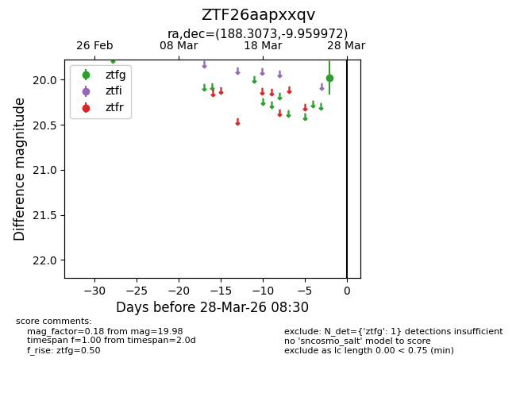
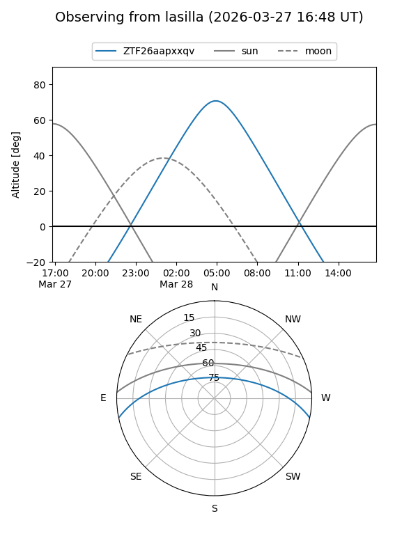
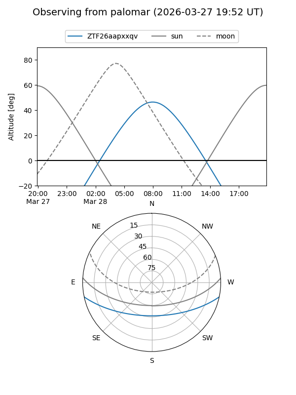

ZTF26aapxxqv
Target ZTF26aapxxqv at 2026-03-28 08:32
Aliases and brokers:
FINK: link
Lasair: link
ALeRCE: link
alt names
ZTF26aapxxqv (ztf,fink_ztf)
Coordinates:
equatorial (ra, dec) = 188.3073,-9.95997
equatorial (HMS+DMS) = 12:33:13.74,-09:57:35.90
galactic (l, b) = (295.5288,+52.64984)
Flags:
Photometry:
last ztfg=19.98
1 ztfg detections
Lightcurve

Visibility


Additional plots